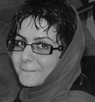
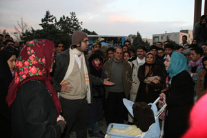
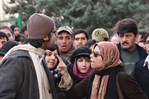
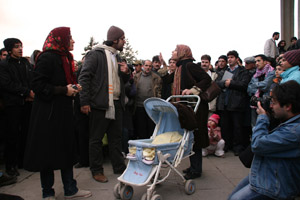

|
|
|
Browsing
Contact Us |
Campaigners |
Face to Face |
Tribune |
Interview |
News |
On the Web |
One Million |
Report
Farsi | Français | German | Italian | Spanish | العربية Also in this section
|
 Protest Theater: A Glance at Two Plays on PolygamyBy: Azadeh Faramarziha Friday 30 May 2008 Translated by: Azadeh Pourzand Various forms of arts have continuously served as great venues for expressing social and political dissatisfactions. Evidently, many of the genres in art, especially in the 20th Century, have come about in the midst of political movements and, at times, during revolutions. The role of political events is especially apparent in the history of performing arts. Theater, in particular, is the art of direct and live communications with members of the audience—an audience that does not necessarily consist of certain individuals or groups from pre-determined social and economic classes and it is assumed to be the general public. Therefore, given the popular nature of the art of theatre, this form of performing arts has often been utilized for expressing political and social messages and for sharing certain objections and oppositions with the general public. The power of theatre in communicating social and political dissatisfactions is so strong that it often threatens governments, especially in situations where dictatorial tactics are utilized. As a result, the art of theater has often been targeted by dictatorships and to this day, governments with these tendencies often react to the threat posed by the art of theatre severely. As societies have become larger and more populated, social struggles and challenges of the human kind, too, have significantly increased. Therefore, artists have become more aware of social struggles in the modern world. Artists attempt to delicately perceive the world through the minds and eyes of the members of their society and to uniquely reflect what they have perceived in their art. An artist turns her/his mind into a mirror so that regular people—people like you and I—who have become blinded by the routines and habits of life, can come face to face with the flaws of our society through their work of art, analyze these flaws and react appropriately. However, theater in Iran has always been focused on mythological and mortal-immortal matters. Thus, since the early days of theatre—with the exception of the golden decade of the 40s—the subject of plays has maintained its distance from social struggles and problems. The figure of women in mythological plays is often introduced as that of mother of Earth and her existence is considered to be beyond mundane matters and the deceits of this world. Nevertheless, recently we have witnessed the emergence of plays which pay special attention to their society and immediate environment. It was through the emphasis of recent plays on social matters that “women” are finally projected in earthly characters and their image is distanced from the mythological figures that dominated in past depictions. In this way, she is presented and analyzed as a member of society. Recent plays depicting social issues and struggles in today’s Iran, include “Family” and “From Your Side” debuting at the Theatre Centers Festival (December 2007) and the Fajr Theatre Festival (February 2008), respectively. Both of these two plays were creatively directed and artistically performed. In addition to the quality of these plays, what makes them unique is the important subject they have chosen to depict as the main theme of their plots.
 “Family” by a theatre team called “The Oppressed” (with the supervision of Ali Zafar Ghahremani Nejad and “From Your Side” directed by Azadeh Ganjeh both were produced mostly in objection to the unfairness of the Family Protection Act; and more specifically were criticizing polygamy a right granted to men. Having utilized Agusto Boal’s technique, both of these plays were performed in the format of workshops. Boal’s technique is mostly centered on arguing and discussing a certain issue with the participation of the members of the audience. In other words, his technique is a theatrical attempt to neutralize the passive nature of the audience and to turn them into actors and actresses by directly engaging them with the theme, plot and discussions of the play. “Family” is about a woman whose husband has the intention of marrying another woman—one of his female colleagues. In performing the different scenes of this story, the actors would invite the members of the audience to have a say in the play by suggesting possible reactions to these circumstances. “From Your Side”, too, had a similar theme as that depicted in “Family” and was meant to challenge and criticize the issue polygamy—with the participation of the audience.
 The interactive format that was chosen for both of the aforementioned plays made them very inspiring and engaging. This technique encouraged the members of the audience at both plays to suggest alternative approaches and reactions to the given situations. For instance, during “Family” there was a scene where a guy—from among the audience—played the role of the husband and attempted to modify his relationship with his new wife. In another scene, a woman volunteered to play the role of the first wife and she decided to take the case to the court. Following this scene, another woman, again a member of the audience, entered the play as the second wife and as soon as she learned that the man is already married, she decided to get divorced—her decision to divorce was very much appreciated by other members of the audience.
 The members of both theater teams stated that they were very content with the participation of the audiences and that they will never forget this memorable experience. What was perhaps the most important result of these plays is that the members of the audience who were from diverse social, economic and cultural classes unanimously expressed discontent with the practice of polygamy. These plays are, therefore, the proof of how all forms of art—and especially theatre—can play a role in addressing important social issues and how theatre can encourage the public to think seriously about social issues and struggles that exist within their society. Our contemporary society is indeed facing numerous struggles and dilemmas and undoubtedly different forms of arts are the most aesthetic and effective way of communicating these social challenges. Read the original article in Farsi Photographs by: Raheleh Asgarizadeh |